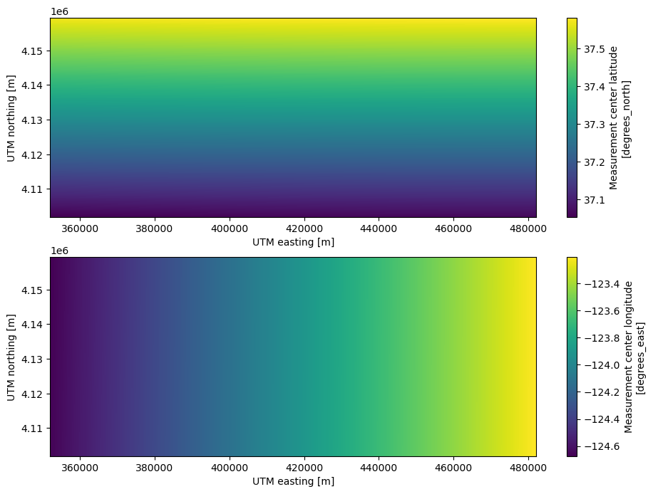
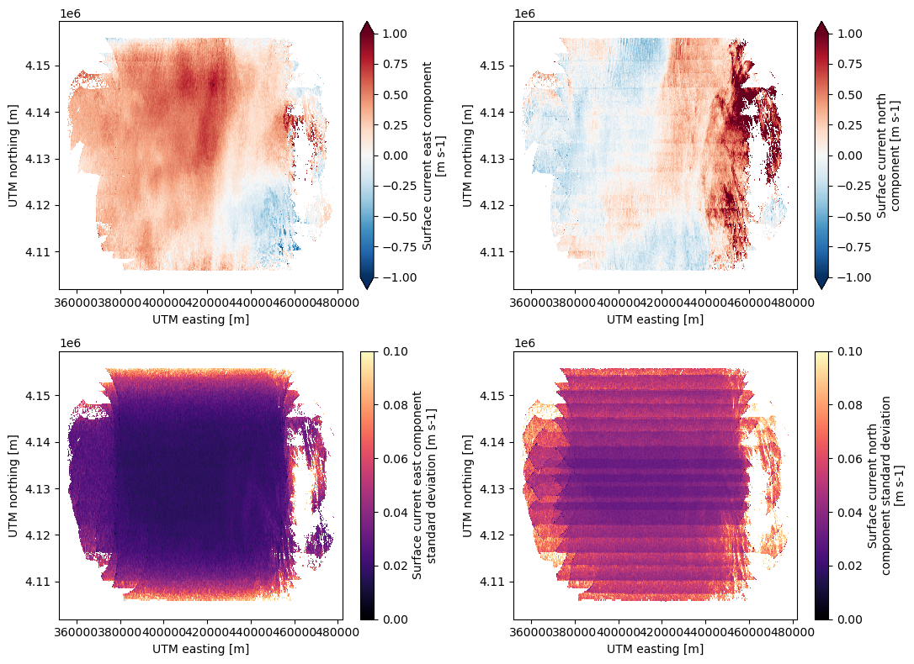
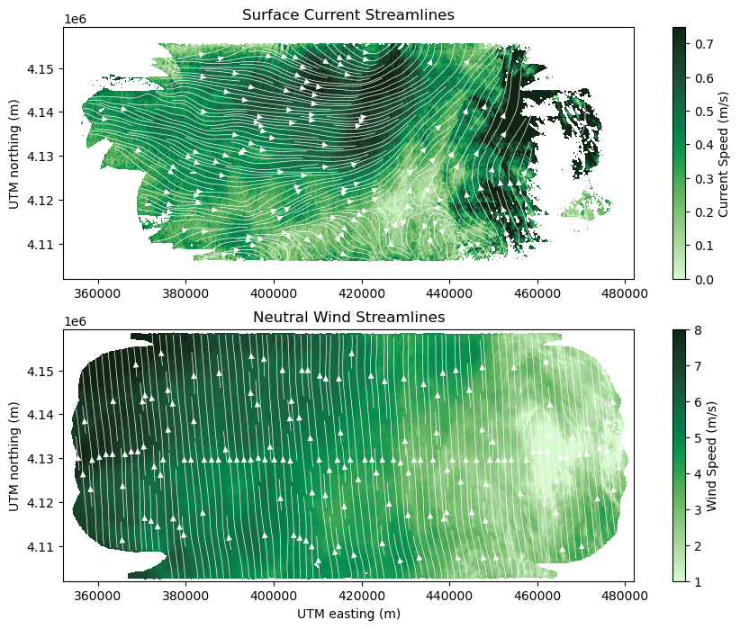
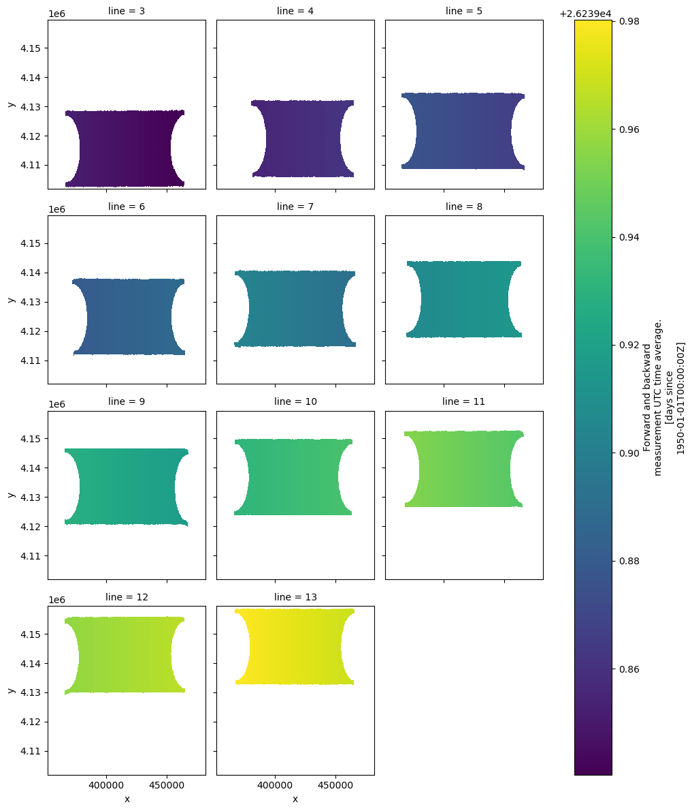
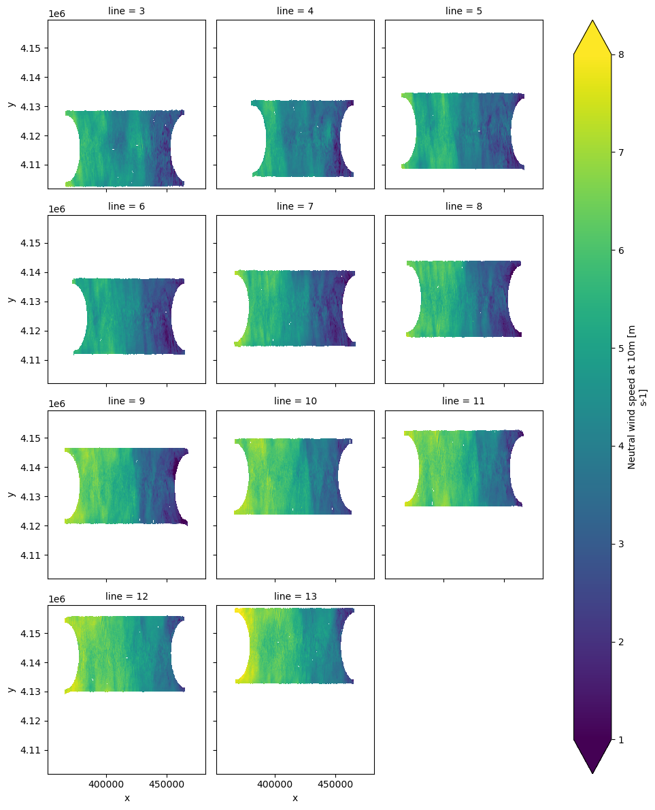
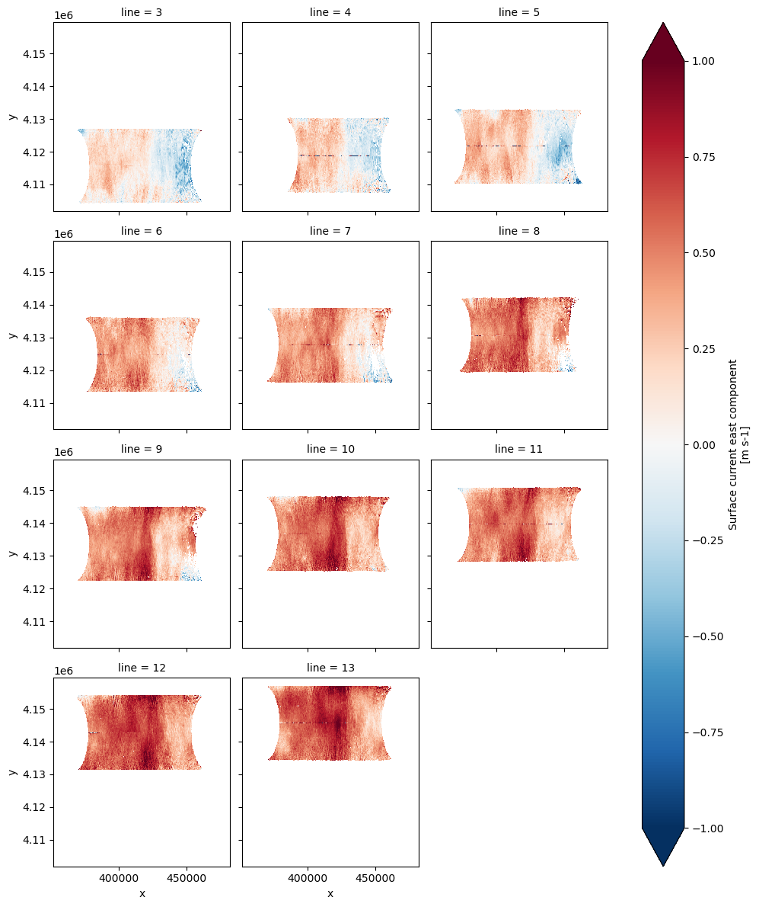
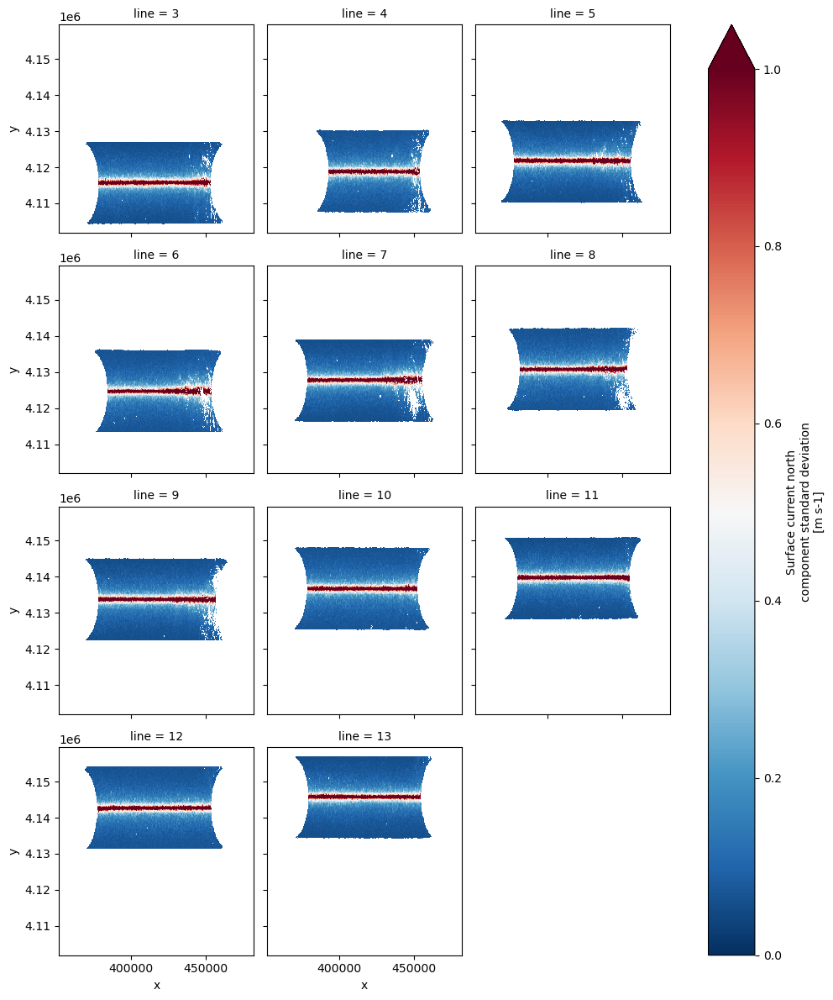
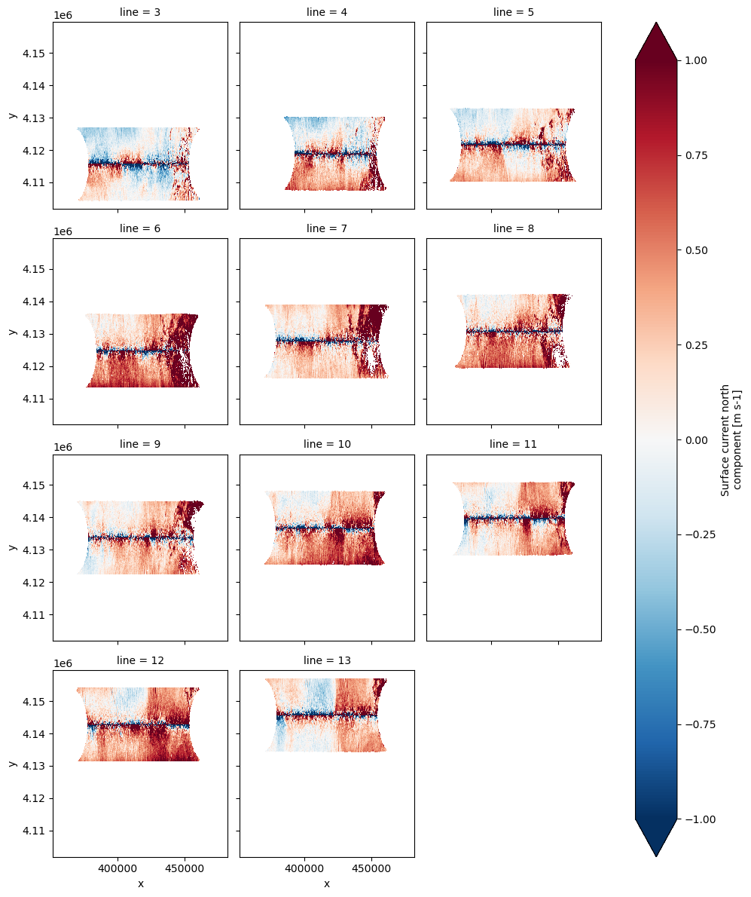
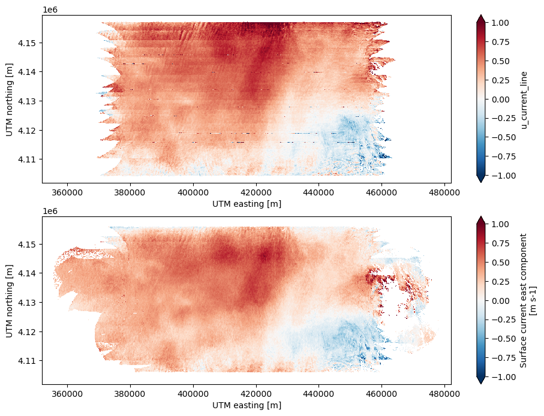
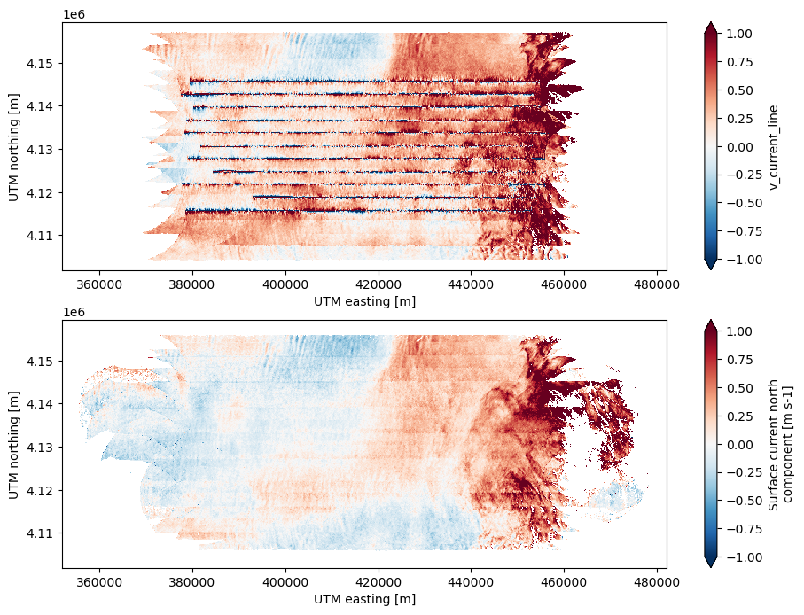

%load_ext autoreload
%autoreload 2S-MODE Workshop: Science Case Study Airborne Part 2
imported on: 2023-07-05
This notebook is from a different repository in NASA’s PO.DAAC, 2022-SMODE-Open-Data-Workshop
The original source for this document is https://github.com/podaac/2022-SMODE-Open-Data-Workshop/blob/main/notebooks/VisualizeDopplerScattData.ipynb
import sys
sys.path.append('../src')from matplotlib import pyplot as plt
%matplotlib inlinefrom pathlib import Path
import numpy as np
import rioxarray
import xarray as xrfrom plot_dopplerscatt_data import make_streamplot_imageimport warnings
warnings.simplefilter('ignore')Load Sample DopplerScatt Data
data_dir = Path('../data/SMODE_L2_DOPPLERSCATT_WINDS_CURRENT_V1')
ds_files = [f.name for f in data_dir.glob('dopplerscatt_*_*.tomoL2CF.nc')]
ds_files['dopplerscatt_20211103_125259.tomoL2CF.nc']idx = 0 # Pick the desired file
# Triplet datasets were experimental and will probably not be used in the future,
# so drop them when reading
ds = xr.open_dataset(data_dir / ds_files[idx], decode_cf=False).drop_dims(
['triplet_index','triplet_dim'])The data are in Universal Transverse Mercator projection
This projection has small distortion and is suitable for calculating spatial derivatives. The latitude and longitude are saved for all points in the swath. Projection to latitude/longitude can be done with the help of the rioxarray package.
for k, v in ds.spatial_ref.attrs.items():
print(f'{k} = {v}')crs_wkt = PROJCS["WGS 84 / UTM zone 10N",GEOGCS["WGS 84",DATUM["WGS_1984",SPHEROID["WGS 84",6378137,298.257223563,AUTHORITY["EPSG","7030"]],AUTHORITY["EPSG","6326"]],PRIMEM["Greenwich",0,AUTHORITY["EPSG","8901"]],UNIT["degree",0.0174532925199433,AUTHORITY["EPSG","9122"]],AUTHORITY["EPSG","4326"]],PROJECTION["Transverse_Mercator"],PARAMETER["latitude_of_origin",0],PARAMETER["central_meridian",-123],PARAMETER["scale_factor",0.9996],PARAMETER["false_easting",500000],PARAMETER["false_northing",0],UNIT["metre",1,AUTHORITY["EPSG","9001"]],AXIS["Easting",EAST],AXIS["Northing",NORTH],AUTHORITY["EPSG","32610"]]
semi_major_axis = 6378137.0
semi_minor_axis = 6356752.314245179
inverse_flattening = 298.257223563
reference_ellipsoid_name = WGS 84
longitude_of_prime_meridian = 0.0
prime_meridian_name = Greenwich
geographic_crs_name = WGS 84
horizontal_datum_name = World Geodetic System 1984
projected_crs_name = WGS 84 / UTM zone 10N
grid_mapping_name = transverse_mercator
latitude_of_projection_origin = 0.0
longitude_of_central_meridian = -123.0
false_easting = 500000.0
false_northing = 0.0
scale_factor_at_central_meridian = 0.9996
spatial_ref = PROJCS["WGS 84 / UTM zone 10N",GEOGCS["WGS 84",DATUM["WGS_1984",SPHEROID["WGS 84",6378137,298.257223563,AUTHORITY["EPSG","7030"]],AUTHORITY["EPSG","6326"]],PRIMEM["Greenwich",0,AUTHORITY["EPSG","8901"]],UNIT["degree",0.0174532925199433,AUTHORITY["EPSG","9122"]],AUTHORITY["EPSG","4326"]],PROJECTION["Transverse_Mercator"],PARAMETER["latitude_of_origin",0],PARAMETER["central_meridian",-123],PARAMETER["scale_factor",0.9996],PARAMETER["false_easting",500000],PARAMETER["false_northing",0],UNIT["metre",1,AUTHORITY["EPSG","9001"]],AXIS["Easting",EAST],AXIS["Northing",NORTH],AUTHORITY["EPSG","32610"]]fig, ax = plt.subplots(nrows=2, ncols=1, figsize=(11, 8))
ds.latitude.plot(ax=ax[0])
ds.longitude.plot(ax=ax[1])<matplotlib.collections.QuadMesh at 0x16cadacd0>
Estimates using all of the observations
all_kwds = [kw for kw in ds if '_all_' in kw]
ds_all = ds[all_kwds].copy(deep=True)
all_kwds['nobs_all_lines',
'wind_speed_all_lines',
'wind_speed_error_all_lines',
'wind_dir_all_lines',
'wind_dir_error_all_lines',
'look_diff_all_lines',
'azimuth_diversity_flag_all_lines',
'u_current_all_lines',
'v_current_all_lines',
'u_current_error_all_lines',
'v_current_error_all_lines']phi = np.radians(ds_all['wind_dir_all_lines'])
ds_all['u_wind_all_lines'] = ds_all['wind_speed_all_lines']*np.sin(phi)
ds_all['v_wind_all_lines'] = ds_all['wind_speed_all_lines']*np.cos(phi)Apply the good data mask for all current observations
Only accept estimates that use a minimum number of observations. The current recommended number is 4. Use the variable nobs_all_lines to make a mask and then mask all variables
def mask_velocity_all_lines(ds, minobs, data_vars, vthresh=0.1):
"""Mask all measurements with fewer than minobs observations."""
bad = ( (ds.nobs_all_lines.data < minobs) |
(ds.u_current_error_all_lines.data > vthresh) |
(ds.v_current_error_all_lines.data > vthresh) )
for v in data_vars:
if np.issubdtype(ds[v].dtype, np.floating):
ds[v].data[bad] = np.nan
return dsminobs = 4
vthresh =0.1
data_vars = [
'u_current_all_lines',
'v_current_all_lines',
'u_current_error_all_lines',
'v_current_error_all_lines']
ds_all = mask_velocity_all_lines(ds_all, minobs, data_vars, vthresh)Plot the current and wind fields
fig, ax = plt.subplots(nrows=2, ncols=2, figsize=(11, 8))
ds_all['u_current_all_lines'].plot(vmin=-1, vmax=1, cmap='RdBu_r', ax=ax[0,0])
ds_all['v_current_all_lines'].plot(vmin=-1, vmax=1, cmap='RdBu_r', ax=ax[0,1])
ds_all['u_current_error_all_lines'].plot(vmin=0, vmax=0.1, cmap='magma', ax=ax[1,0])
ds_all['v_current_error_all_lines'].plot(vmin=0, vmax=0.1, cmap='magma', ax=ax[1,1])
plt.tight_layout()
kwargs = dict(
cmap='algae',
fout=None,
orientation='landscape',
dpi=120,
cbar=True,
show_axes=True,
grid=False,
subsample=1,
smooth_stddev=2,
raster=True,
streamlines=True,
color='white',
density=3,
linewidth=0.5,
)
fig, ax = plt.subplots(nrows=2, ncols=1, figsize=(11, 8))
cbar_kwds = {'label':'Current Speed (m/s)'}
vmin = 0.
vmax = 0.75
make_streamplot_image(
ds_all['u_current_all_lines'],
ds_all['v_current_all_lines'],
vmin,
vmax,
cbar_kwds=cbar_kwds,
fig=fig,
ax=ax[0],
**kwargs
)
ax[0].set_ylabel('UTM northing (m)')
ax[0].set_title('Surface Current Streamlines')
cbar_kwds = {'label':'Wind Speed (m/s)'}
vmin = 1.
vmax = 8.
make_streamplot_image(
ds_all['u_wind_all_lines'],
ds_all['v_wind_all_lines'],
vmin,
vmax,
cbar_kwds=cbar_kwds,
fig=fig,
ax=ax[1],
**kwargs
)
ax[1].set_xlabel('UTM easting (m)')
ax[1].set_ylabel('UTM northing (m)')
ax[1].set_title('Neutral Wind Streamlines');
Look at the line data
Line data uses only a single flight line to get estimates of surface currents and winds. This minimizes the temporal aliasing, but maximizes the errors at the nadir and swath edges. This effect is most marked for the currents and not as important for the winds. Due to the smaller number of looks, the geographical coverage is limited.
[kw for kw in ds if ('_line' in kw) and ('_lines' not in kw)]['wind_speed_line',
'wind_speed_line_merged',
'wind_speed_error_line',
'wind_dir_line',
'wind_dir_line_merged',
'wind_dir_error_line',
'winds_likely_corrupted_line',
'look_diff_line',
'azimuth_diversity_flag_line',
'xt_bias_u_line',
'xt_bias_v_line',
'u_current_line',
'v_current_line',
'u_current_error_line']ds['mean_observation_time'].plot(x='x', y='y', col='line', col_wrap=3,
cmap='viridis');
ds['wind_speed_line'].plot(x='x', y='y', col='line', col_wrap=3,
vmin=1, vmax=8, cmap='viridis');
ds['u_current_line'].plot(x='x', y='y', col='line', col_wrap=3,
vmin=-1, vmax=1, cmap='RdBu_r');
ds['u_current_error_line'].plot(x='x', y='y', col='line', col_wrap=3,
vmin=0, vmax=1, cmap='RdBu_r');
ds['v_current_line'].plot(x='x', y='y', col='line', col_wrap=3,
vmin=-1, vmax=1, cmap='RdBu_r');
Note The v-component velocity error seems to be missing from the PODAAC S-MODE V1 dataset.
It is instructive to compare the average over all lines with the estimates utilizing all of the data.
fig, ax = plt.subplots(nrows=2, ncols=1, figsize=(11, 8))
ds['u_current_line'].mean(dim='line').plot(vmin=-1,vmax=1,cmap='RdBu_r', ax=ax[0])
ds_all['u_current_all_lines'].plot(vmin=-1,vmax=1,cmap='RdBu_r', ax=ax[1])<matplotlib.collections.QuadMesh at 0x17f0ff210>
fig, ax = plt.subplots(nrows=2, ncols=1, figsize=(11, 8))
ds['v_current_line'].mean(dim='line').plot(vmin=-1,vmax=1,cmap='RdBu_r', ax=ax[0])
ds_all['v_current_all_lines'].plot(vmin=-1,vmax=1,cmap='RdBu_r', ax=ax[1])<matplotlib.collections.QuadMesh at 0x17f20eb90>